floodflow — A Manual to Climate-Informed Flood Modelling in R
Source:vignettes/articles/floodflow_manual.Rmd
floodflow_manual.RmdThis manual teaches the floodflow R package from the
ground up. It assumes no prior hydrology and explains every term as it
appears. Part 1 runs the full pipeline in
lumped mode on the Odaw basin, Accra — inspired by the floods
of June 2026. Part 2 takes the same functions into
spatial mode, producing discharge, velocity, depth and time
maps on a real elevation model, so you can make maps for your own study
areas. Part 3 is a set of exercises, projects,
references and the code behind every figure.
Dr George Owusu Department of Geography and Resource Development, University of Ghana
Version 0.2.0
Package: floodflow
Core runs in pure R — spatial maps use the 'terra' package
For: anyone modelling floods in R — geography, hydrology, environmental science,
teaching or practice
Prerequisites: basic R literacy (no dplyr or ggplot2 needed)
License: MITEvery number and figure in this manual was produced by running the package on real data. Part 1 is built on
accra_rainfall— a real 46-year daily rainfall record for Accra now bundled with the package (Section 4). The script that regenerates every figure,reproduce_manual.R, ships in this folder. The numbers were produced on R 4.6.0 withfloodflow0.2.0.
A note on the code tags above each block: ▶ Runs on its
own — copy and run it by itself. ↑ Continues from
above — it uses variables built earlier in the same section, so
run them in order (or use the complete script in Section 26). ○
Shown, not run here — needs an external tool (like
whitebox) or a file; shown for reference.
Contents
Part 1 — the pipeline, step by step (lumped mode, Odaw basin,
Accra) 1. What this package does 2. Installing and loading 3.
The project object: your workbench 4. Getting the data: real Accra
rainfall (and fetching your own) 5. flood_extremes(): how
big can the rain get? 6. flood_scenario(): what about the
future? 7. Reality check: the June 2026 Accra floods 8.
roughness(): how much does the ground slow water? 9.
flood_runoff(): rain becomes river flow 10. The water
balance: where the rain goes 11. flood_route(): where the
water goes and how deep 12. flood_hydraulics(): timing and
speed 13. flood_uncertainty(): how sure are we? 14.
flood_vulnerability(): who and what is harmed? 15.
flood_surrogate(): fast what-if analysis 16.
flood_map(): drawing the result 17. The whole pipeline at a
glance 18. Quick function reference
Part 2 — from single numbers to maps (spatial mode) 19. The elevation model (DEM) 20. Roughness from NDVI (a Manning’s n map) 21. Calculating discharge two ways 22. The depth and inundation maps 23. The velocity map 24. Time-bound maps 25. The complete spatial script 26. Maps for every day, not just the peak 27. Saving your maps, and troubleshooting
Part 3 — exercises, projects and reference 28. Citing floodflow 29. Reproducing the figures 30. Glossary of terms 31. Exercises 32. Projects 33. References 34. Appendix: the code behind every figure
PART 1 — The pipeline, step by step
Running floodflow in lumped mode on the Odaw basin, Accra.
1. What this package does
A flood model answers a practical chain of questions: how much rain
can fall, how much of it becomes river flow, how deep the water gets,
how fast it moves, how sure we are, and finally who and what is harmed.
floodflow connects all of these into one pipeline, designed
for places where data is scarce — which describes most of the world.
The package has one guiding idea: it is map-first. Every stage produces something you could draw on a map, because a flood is a geographic event. It is also climate-aware: any flood can be modelled under today’s climate or under a warmer future, side by side.
Key terms, defined once
- Catchment (or basin) — the area of land where all rainfall drains to a common outlet. The Odaw basin drains much of Accra.
- Discharge — the volume of water flowing past a point per second (m³/s), or as a depth of runoff (mm/day).
- Return period — how often, on average, a rainfall of a given size is expected. A ‘100-year rainfall’ has a 1-in-100 (1%) chance of being exceeded in any year.
- Design event — the rainfall or flood of a chosen return period that engineers plan for.
- Manning’s n — a roughness number describing how much a surface slows water. Smooth concrete is low (~0.015); a vegetated channel is high (~0.1).
- Hydrograph — a graph of discharge over time, a flood rising to a peak and falling back.
2. Installing and loading
○ Shown, not run here
install.packages("floodflow") # from CRAN
# or the development version:
# remotes::install_github("gowusu/floodflow")That is all you need. The core is pure R. Some stages can optionally
use extra ‘engine’ packages for more power (airGR for
advanced runoff, terra for maps), but every stage works
without them by falling back to a built-in method — you never get stuck
because a package is missing.
Quick start: a result in 30 seconds. Rainfall in, flood depth out.
▶ Runs on its own
library(floodflow)
fp <- flood_project("test")
fp$rainfall <- data.frame(date = Sys.Date() + 0:10,
precip_mm = c(0,0,0,20,50,30,10,0,0,0,0))
fp <- flood_runoff(fp, lat_deg = 5.6)
fp <- flood_route(fp, width = 25, slope = 0.002, area_km2 = 400)
fp$route$peak_depth_m #> ~2.07 mThat is the whole idea in six lines. The rest of the manual unpacks each step and adds scenarios, uncertainty and maps.
System requirements. R ≥ 4.1 on Windows, macOS or Linux. For spatial runs, install
terra; 4 GB RAM is comfortable for basins up to a few hundred thousand cells. The LDD / cumulative-discharge step needswhiteboxinstalled separately (whitebox::wbt_init()).
3. The project object: your workbench
Everything in floodflow revolves around one object created by
flood_project(). Think of it as a workbench that carries
your data and results from stage to stage.
▶ Runs on its own
fp <- flood_project("Odaw basin, Accra", crs = "EPSG:32630")
fp
#> <flood_project>
#> name: Odaw basin, Accra
#> crs: EPSG:32630
#> populated: <none yet>The crs is the coordinate reference system — the map
projection your data uses. EPSG:32630 is the metric UTM
zone covering Accra. As we run each stage, the populated
line fills up.
4. Getting the data: real Accra rainfall (and fetching your own)
A flood model is only as good as its rainfall. This manual uses
real, observed-and-reanalysis data — a 46-year daily
record for Accra that ships with the package as
accra_rainfall. It comes from NASA POWER
(a free, global satellite-and-model service), retrieved with the
sebkc::weather() function, and is bundled inside
floodflow so the manual keeps working even if the online service is ever
unavailable. Load it and drop it onto the workbench:
▶ Runs on its own
data("accra_rainfall") # ships with floodflow
head(accra_rainfall)
#> date precip_mm temp_c
#> 1 1981-01-01 0.1 26.9
#> 2 1981-01-02 0.1 27.2
#> ...
nrow(accra_rainfall) #> 16637 days, 1981-01-01 to 2026-07-20
fp$rainfall <- accra_rainfallThe record has three columns: date,
precip_mm (daily rainfall in millimetres) and
temp_c (daily mean temperature, used later for
evaporation). That date + precip_mm
shape is all floodflow ever needs for rainfall — swap in your
own gauge data in the same format and everything else works unchanged. A
quick look at the record:
- Days of record: 16,637 (1981-01-01 → 2026-07-20)
- Wettest day: 110.5 mm, on 2023-07-08
- Mean annual rainfall: ~1,200 mm — Accra’s coastal-savanna climate, with a major wet season around June and a minor one around October.
Fetching your own record
Nothing here is special to Accra except the coordinates. To build the
same record for your location, use
sebkc::weather() — it needs only a longitude and latitude
(west and south are negative). This is shown for reference; you do not
need to run it, because the Accra data is already bundled.
○ Shown, not run here
# install.packages("sebkc")
library(sebkc)
# real daily weather for any point, straight from NASA POWER:
w <- weather(longitude = -0.20, latitude = 5.60,
NASA.SSE = list(from = "1981-01-01", to = "2026-07-20"))
wx <- w$NASA.SEE$data # Tmax Tmin RH uz Rs P date ...
rain <- data.frame(date = as.Date(wx$date),
precip_mm = wx$P, # NASA POWER PRECTOTCORR
temp_c = wx$Tmean) # NASA POWER T2MPrefer a spreadsheet? The same data downloads by hand from the
NASA POWER Data Access Viewer (https://power.larc.nasa.gov/data-access-viewer/): pick a
point, choose Daily, tick precipitation and temperature, and
export CSV. Other free daily sources you can line up into the same
date, precip_mm shape include Open-Meteo
(https://open-meteo.com) and ERA5 via
the Copernicus CDS.
5. flood_extremes(): how big can the rain get?
The first analytical stage asks: given our record, how large is the rare, dangerous rainfall? It fits a GEV distribution (Generalized Extreme Value — the standard model for annual maxima) to the biggest rainfall of each year, then reads off design rainfall by return period. It also tests whether extremes are changing: it fits a steady (‘stationary’) version and a trend (‘non-stationary’) version and compares them with a likelihood-ratio test.
↑ Continues from above
fp <- flood_extremes(fp)
fp$extremes
#> <flood_extremes>
#> years of record: 46
#> GEV (stationary): mu=30.47 sigma=9.18 shape=0.252
#> location trend (mm/yr): 0.0427
#> trend test: LR=0.13 p=0.72 (no significant trend)
#> return levels (mm):
#> 2-yr: 34.0
#> 10-yr: 58.3
#> 25-yr: 75.6
#> 50-yr: 91.4
#> 100-yr: 110.1Reading this output. mu, sigma, shape
are the three GEV parameters — location (centre), scale (spread) and
shape (tail heaviness); the package fits them. The return
levels are the headline: the 100-year daily rainfall for Accra
is about 110 mm.
The trend test — an honest result. Over this 46-year record the daily maxima show no statistically significant upward trend (LR = 0.13, p = 0.72). Read this carefully: it does not mean the climate is unchanging. A 46-year satellite-era record is short and spatially coarse for detecting a trend in rare events, and seasonal or monthly totals — or a longer, finer record — may tell a different story. What the data do say is important in its own right: even a climate with no detectable trend in daily maxima produces devastating rare events, as Section 7 shows starkly. The stationary-vs-nonstationary machinery is still exactly what you run on your own basin; here it happens to report “not significant”. The plotted annual maxima bear this out: the regression line drifts up a little — pulled by the wet years 2022–2023 — but that apparent rise is not statistically significant, and a short record with a couple of wet years can look like a trend without being one (Figure 1).
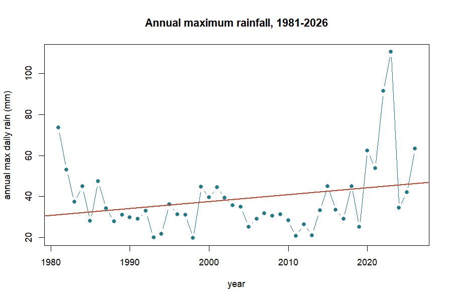
The equation behind this: GEV return levels. A return level is the rainfall expected once every
Tyears. The GEV turns the three fitted parameters — location μ, scale σ, shape ξ — into that rainfall with one formula:With μ = 30.47, σ = 9.18, ξ = 0.252, the 100-year storm (T = 100) works out to ≈ 110 mm — exactly the value the package reports.
6. flood_scenario(): what about the future?
Today’s 100-year storm will not be the future’s 100-year storm.
flood_scenario() adjusts the design rainfall for a changed
climate. The simplest robust method for data-scarce settings is the
delta method: multiply by a change factor from climate
projections. Here we apply +20%, a plausible mid-century value under the
SSP2-4.5 pathway (a moderate-emissions future).
↑ Continues from above
fp <- flood_scenario(fp, method = "delta", change_factor = 1.20,
scenario_label = "SSP2-4.5 2050")
fp$scenario
#> <flood_scenario>
#> method: delta label: SSP2-4.5 2050
#> period baseline adjusted change
#> 2-yr 34.0 40.8 x1.20
#> 10-yr 58.3 69.9 x1.20
#> 25-yr 75.6 90.7 x1.20
#> 50-yr 91.4 109.7 x1.20
#> 100-yr 110.1 132.1 x1.20Today’s 100-year rainfall is 110 mm; under this scenario it becomes 132 mm. A storm that is rare today becomes noticeably more common in a warmer Accra — the essence of why planning for climate change matters even when the historical trend is undetectable. The present-day design rainfall (blue) and the mid-century SSP2-4.5 estimate (+20%, red) sit side by side by return period (Figure 2).
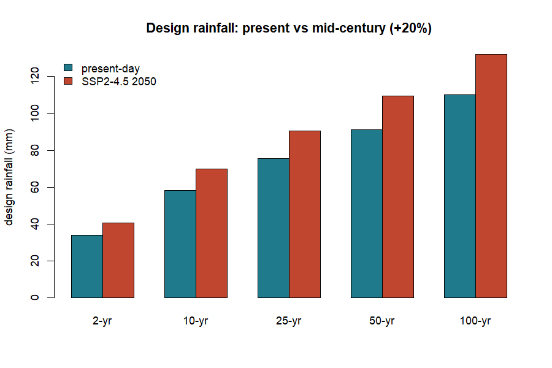
Other methods: method = "trend" projects the fitted
trend forward to a horizon year; method = "cmip6" is
reserved for feeding in downscaled climate-model output directly.
7. Reality check: the June 2026 Accra floods
The scenarios above are model projections. But while this package was being written, Accra lived the reality. On Monday, 29 June 2026, the city flooded catastrophically after an extraordinary downpour. According to the Ghana Meteorological Agency (GMet), reported to Parliament, that single day delivered 169.2 mm of rain. June 2026 became the wettest month in Ghana’s recorded history, with a cumulative 593.2 mm, surpassing the previous records of 420.6 mm (2002) and 380.3 mm (2015). The floods claimed lives, displaced nearly 39,000 people and drew a GHS 350 million emergency response.
Why this section matters. The rest of the manual uses the bundled
accra_rainfallrecord so it is reproducible. This section uses the real, officially reported figures from GMet and Parliament (June 2026) as a teaching case — to test whether our modelled ‘future’ scenarios were bold enough against what actually happened.
Where the 2026 event lands. Our present-day 100-year storm is 110 mm; our SSP2-4.5 mid-century (2050) 100-year storm is 132 mm. The real 29 June event (169.2 mm) exceeded even the 2050 projection by 37 mm. We can ask the package directly how rare that is, by feeding it into the fitted GEV.
▶ Runs on its own
# using the fitted GEV parameters from flood_extremes()
return_period <- function(x, mu, sigma, xi) {
z <- 1 + xi * (x - mu) / sigma
1 / (1 - exp(-z^(-1 / xi)))
}
return_period(169.2, 30.47, 9.18, 0.252) #> ~511 years (present-day)
return_period(169.2, 30.47*1.2, 9.18*1.2, 0.252) #> ~255 years (+20% scenario)Under today’s statistics the event looks like a 1-in-511-year storm; even under the warmer +20% scenario it is still a 1-in-255-year storm. Extraordinarily rare on paper — yet it happened. This is the practical lesson of the whole manual: a record can show no significant trend and still deliver, within its own span, an event far beyond the 100-year — even beyond a mid-century projection. Design standards built on the historical record alone can badly understate the true hazard. The 2026 daily total sits well above both the present-day (110 mm) and mid-century (132 mm) 100-year design storms (Figure 3), and June 2026’s 593 mm dwarfs the previous monthly records of 2002 and 2015 (Figure 4).
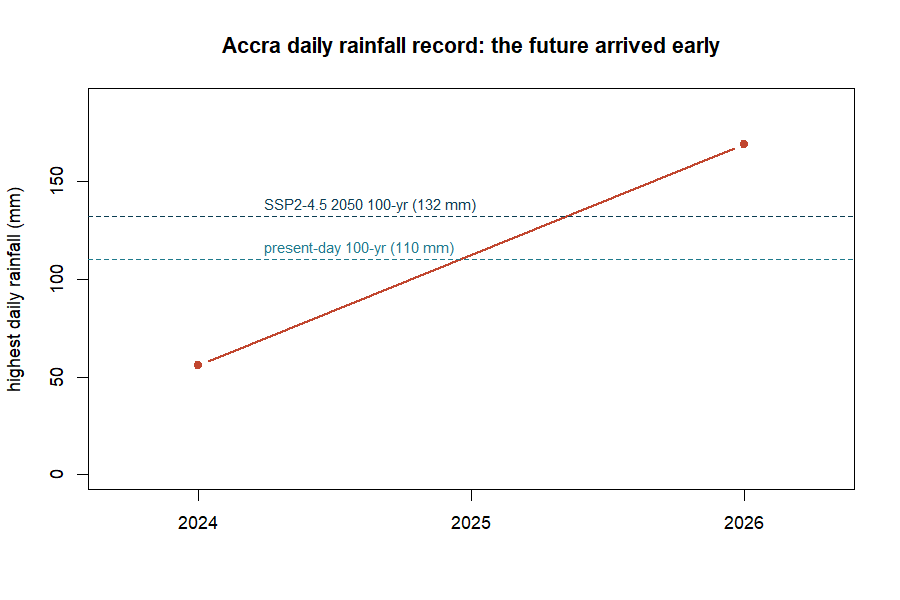
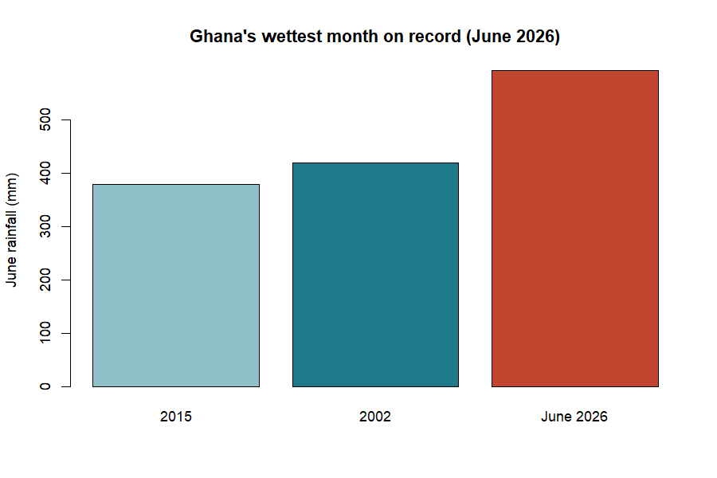
For the modeller, the takeaway is humility and vigilance: use climate scenarios, but treat them as a floor, not a ceiling, and cross-check modelled extremes against the newest observations.
8. roughness(): how much does the ground slow
water?
Before we can turn rain into a flood we need Manning’s n — the roughness of the channel and land, the single most influential hydraulic setting. The simplest option is one constant value everywhere:
↑ Continues from above
fp <- roughness(fp, method = "constant", value = 0.035)A value of 0.035 is typical for a natural earth channel. Two richer
options exist: method = "landcover" looks up roughness from
land-cover classes, and method = "ndvi" derives it from
satellite vegetation greenness (both read maps when terra
is installed). The built-in lookup table shows the idea:
| Land cover | Manning’s n | Land cover | Manning’s n | |
|---|---|---|---|---|
| water | 0.030 | cropland | 0.040 | |
| urban / paved | 0.015 | shrub | 0.050 | |
| bare soil | 0.025 | wetland | 0.070 | |
| grassland | 0.035 | forest | 0.100 |
Table 1. The floodflow_lc_roughness lookup table.
Rougher surfaces (forest, wetland) slow water more.
9. flood_runoff(): rain becomes river flow
Not all rain becomes flood; some soaks in or evaporates.
flood_runoff() converts the rainfall record into a
discharge series. It first works out evapotranspiration — water lost to
the air and plants — using the Oudin formula, which
needs only temperature and latitude, perfect for data-scarce places. (It
reads the temp_c column of accra_rainfall;
without one it assumes a constant 28 °C.)
↑ Continues from above
fp <- flood_runoff(fp, lat_deg = 5.6, engine = "simple")
fp$runoff
#> <flood_runoff>
#> engine: simple (fallback)
#> days: 16637
#> peak discharge: 114.98 mm/day on 2023-07-10
#> mean PET: 4.59 mm/dayHere PET is potential evapotranspiration (the atmosphere’s ‘thirst’),
and 4.59 mm/day is realistic for hot, sunny Accra. The
"simple" engine is the built-in model; installing
airGR and setting engine = "airGR" switches to
the professional GR4J rainfall-runoff model.
floodflow works on a daily timestep. Each row of rainfall is one day; discharge is mm/day. For hourly data, sum it to daily totals first.
Where does infiltration go? Inside
flood_runoff() a production store (a soil-moisture
bucket) decides how much rain soaks in versus runs off: when the soil is
dry, most rain infiltrates; as it saturates, the runoff fraction climbs
toward one. Infiltration is handled implicitly, through soil
storage.
The equation behind this: Oudin evapotranspiration. where is the sun’s energy at the top of the atmosphere (from day-of-year and latitude), converts energy to water depth, and is temperature. floodflow exposes this as
pet_oudin().
Plotting the discharge series over a wet season shows the flood wave — rising to a peak and receding — that the next stage will route (Figure 5).
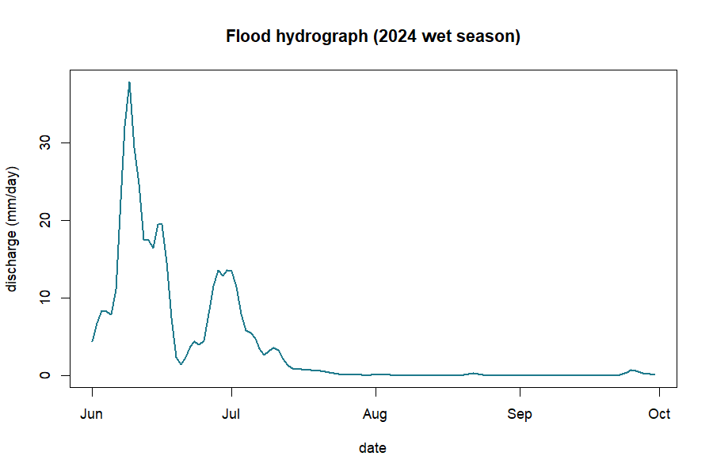
10. The water balance: where the rain goes
Rain that falls does not all become flood. Some evaporates or is taken up by plants (PET), some soaks into the soil and is stored, and only the rest runs off. This partition is the water balance.
The idea behind this: the water balance. Rainfall (P) splits three ways: runoff (Q, the flood-making part), actual evaporation (AET) and the change in soil-water storage (ΔS). Over a long period ΔS averages near zero, so most rain leaves as either runoff or evaporation.
↑ Continues from above
P <- sum(fp$rainfall$precip_mm) # total rainfall (mm)
Q <- sum(fp$runoff$discharge$Q_mm) # total runoff (mm)
c(rainfall = round(P), runoff = round(Q), ratio = round(Q / P, 3))
#> rainfall runoff ratio
#> 54749 30772 0.562Over the full 46-year record, of ~54,700 mm of rain about 30,800 mm (a runoff ratio of 0.56) became streamflow in this simple model; the rest evaporated or was stored. The runoff ratio is the number to watch: it rises sharply when the soil is already wet, which is why the same rain makes a far bigger flood on saturated ground — the role of antecedent wetness. Month by month, rainfall (blue) stands against evaporative demand (red), with the resulting runoff as the line (Figure 6).
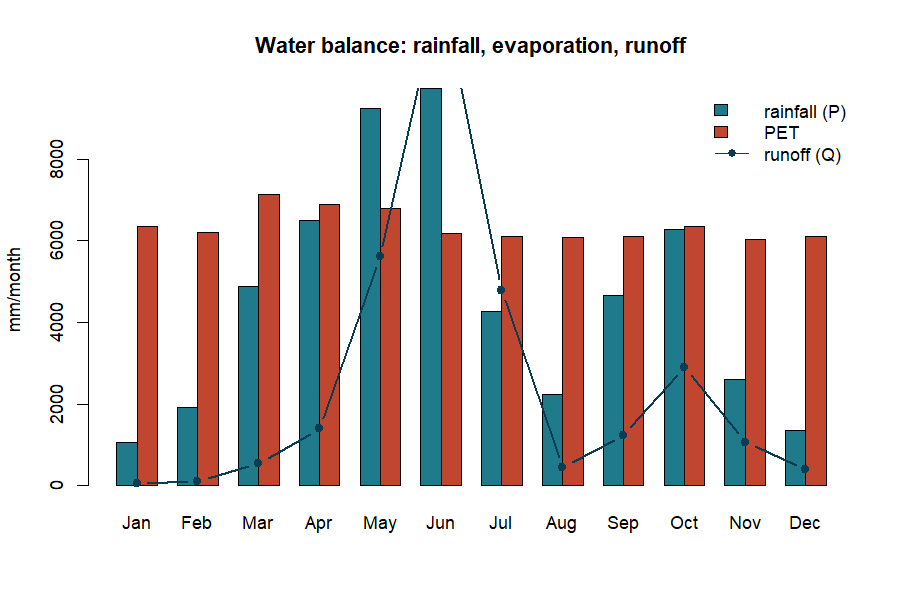
An honest limit. The built-in
"simple"engine is a runoff generator, not a fully mass-conserving water-balance model. It is perfect for seeing the partition of rainfall; for a strict closed balance use the calibrated GR4J model viaengine = "airGR".
11. flood_route(): where the water goes and how
deep
This is the heart of the flood model. flood_route()
moves the flood wave down the channel and computes water depth. It
offers five methods forming a ‘ladder’ from simple to sophisticated; all
compute depth from Manning’s equation but differ in how the peak spreads
and shrinks (attenuates) as it travels.
↑ Continues from above
fp <- flood_route(fp, method = "muskingum-cunge",
width = 25, slope = 0.002, area_km2 = 400)
fp$route
#> <flood_route>
#> method: muskingum-cunge
#> peak depth: 5.40 m
#> peak velocity: 3.93 m/s
#> attenuation: 0.996 (routed peak / inflow peak)
#> channel: width=25m slope=0.002 n=0.035So the design flood is about 5.4 metres deep, moving at 3.9 m/s — fast and dangerous. The attenuation of 0.996 means the routed peak kept 99.6% of its height over this reach.
The five-method ladder. manning-normal
— steady flow, no wave movement (quick baseline). kinematic
— the wave travels but barely flattens (steep channels).
diffusive — the wave flattens realistically.
muskingum-cunge — the practical default: accurate and
cheap. dynamic — the most complete stable approximation in
pure R. Run the same flood through all five methods and the simpler ones
keep more of the peak while the more physical ones attenuate it more
(Figure 7).
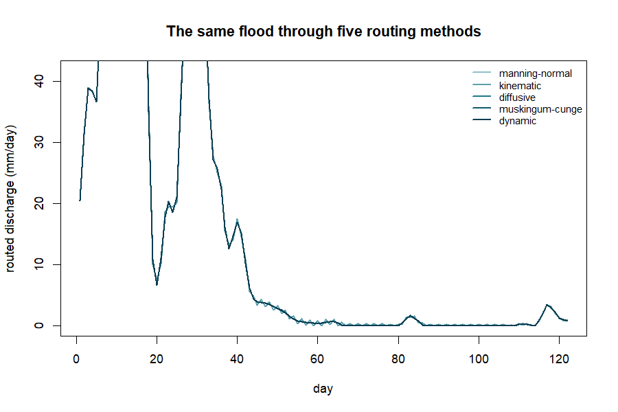
The equation behind this: Muskingum-Cunge routing. Each new outflow is a weighted blend of inflow and outflow at the previous step; the weights (summing to 1) carry the wave’s speed and spreading, so the peak arrives later and lower downstream.
An honest limit. Even the
dynamicmethod is a stable 1-D approximation, not a full 2-D hydrodynamic simulation. For detailed floodplain mapping, couple floodflow to LISFLOOD-FP or HEC-RAS.
12. flood_hydraulics(): timing and speed
A flood has speed and timing that matter for warnings and escape.
flood_hydraulics() derives these from the routed flow.
↑ Continues from above
fp <- flood_hydraulics(fp, length_m = 12000, overland_m = 200)
fp$hydraulics$tc
#> kirpich kerby kerby_kirpich velocity
#> 295.19 48.01 339.41 50.88These are four estimates of the time of
concentration — how long water takes to travel from the
farthest point of the catchment to the outlet, a key control on how fast
a flood builds. Kirpich suits channel flow;
Kerby the shallow overland part; kerby_kirpich
combines them; velocity uses the routed flow speed.
The equation behind this: Kirpich time of concentration. from channel length (m) and slope . Steeper catchments drain faster. Exposed as
tc_kirpich(length_m, slope).
13. flood_uncertainty(): how sure are we?
Rather than pretend our 5.4 m is exact,
flood_uncertainty() quantifies the doubt using
GLUE (Generalized Likelihood Uncertainty Estimation):
it tries thousands of plausible parameter sets, keeps those matching an
observed flood depth, and reports a range. Suppose surveyors measured a
5.4 m high-water mark:
↑ Continues from above
fp <- flood_uncertainty(fp, observed_depth_m = 5.4, n_sim = 3000, seed = 1)
fp$uncertainty
#> <flood_uncertainty> (GLUE)
#> observed depth: 5.40 m
#> behavioural sets: 300
#> 90% depth band: [5.13, 5.67] m (median 5.40)
#> observed in band: TRUE
#> inverse estimates:
#> Manning n: 0.0412 [0.0207, 0.0597]
#> width: 29.3 m [14.1, 39.9]
#> equifinality (n-width corr): 0.97Instead of a single number we have a 90% band of 5.13–5.67
m — an honest statement of confidence. The stage also solves
the inverse problem (what roughness and width best explain the observed
flood) and reports that many combinations fit equally well —
equifinality (here the n–width correlation
is 0.97), which the package surfaces rather than hides.
14. flood_vulnerability(): who and what is harmed?
A flood becomes a disaster where it meets people and property.
flood_vulnerability() combines three layers into a risk map
using the standard formula Risk = Hazard × Exposure ×
Vulnerability. Because it multiplies, risk is zero wherever any
factor is zero.
↑ Continues from above
set.seed(7)
fp <- flood_vulnerability(fp,
exposure = rpois(100, 60), # population per cell
vulnerability = runif(100)) # deprivation index
fp$vulnerability
#> <flood_vulnerability> (Hazard x Exposure x Vulnerability)
#> risk index: min=0.000 mean=0.309 max=1.000
#> components: hazard, exposure, vulnerabilityThe result is a risk index from 0 to 1. The highest values are the hotspots — where deep water, dense population and social vulnerability coincide — exactly where a city like Accra would focus drainage upgrades and early warning. Hazard = the physical flood; Exposure = what is in harm’s way; Vulnerability = how susceptible those exposed are.
15. flood_surrogate(): fast what-if analysis
Running the full model many times can be slow.
flood_surrogate() trains a fast emulator that mimics the
depth model, so you can explore ‘what if’ questions instantly.
↑ Continues from above
fp <- flood_surrogate(fp, n_train = 400, seed = 2)
fp$meta$surrogate$predict(data.frame(Q = 150, n = 0.04, width = 25))The in-sample fit is R² = 1.00 because Manning’s law is exactly
log-linear; with ranger installed it uses a random forest
for more general problems. A convenience for rapid exploration — not a
replacement for the real model.
16. flood_map(): drawing the result
The map-first payoff. flood_map() renders any layer —
depth, risk, velocity or uncertainty. With tmap or
leaflet and spatial data it draws an interactive map;
without them it returns a tidy numeric summary so your workflow never
breaks.
↑ Continues from above
m <- flood_map(fp, layer = "depth")
m$data
#> layer min mean max
#> depth 5.40 5.40 5.40In a real spatial run this would be a full depth map of the Odaw basin (Part 2).
17. The whole pipeline at a glance
The complete Accra analysis, start to finish — a real, runnable script.
▶ Runs on its own
library(floodflow)
data("accra_rainfall")
fp <- flood_project("Odaw basin, Accra", crs = "EPSG:32630")
fp$rainfall <- accra_rainfall
fp <- flood_extremes(fp)
fp <- flood_scenario(fp, method = "delta", change_factor = 1.20)
fp <- roughness(fp, method = "constant", value = 0.035)
fp <- flood_runoff(fp, lat_deg = 5.6, engine = "simple")
fp <- flood_route(fp, method = "muskingum-cunge", width = 25, slope = 0.002, area_km2 = 400)
fp <- flood_hydraulics(fp, length_m = 12000)
fp <- flood_uncertainty(fp, observed_depth_m = 5.4)
fpThe Accra story in numbers
| Question | floodflow’s answer |
|---|---|
| How big is the 100-yr storm today? | 110 mm/day |
| …and mid-century (SSP2-4.5)? | 132 mm/day (+20%) |
| Are daily extremes intensifying? | No significant trend (p = 0.72) |
| Can a rare event still exceed design? | Yes — 29 Jun 2026 hit 169 mm (~1-in-511 yr) |
| How deep is the design flood? | 5.40 m |
| How fast does it flow? | 3.93 m/s |
| How confident (90% band)? | 5.13 – 5.67 m |
| Where is risk highest? | dense + deprived + deep cells |
Table 2. The complete flood assessment for the Odaw basin, produced entirely by floodflow on real Accra rainfall.
18. Quick function reference
| Function | What it does | Optional engine |
|---|---|---|
flood_project() |
create the workbench object | — |
flood_extremes() |
design rainfall + trend test | extRemes |
flood_scenario() |
climate-adjust the design event | — |
roughness() |
assign Manning’s n | terra |
flood_runoff() |
rainfall → discharge | airGR |
flood_route() |
route the wave, compute depth | — |
flood_hydraulics() |
time of concentration, speed | — |
flood_uncertainty() |
GLUE uncertainty band | — |
flood_vulnerability() |
risk = hazard × exposure × vuln. | — |
flood_surrogate() |
fast ML emulator | ranger |
flood_map() |
draw a layer | tmap, leaflet |
PART 2 — From single numbers to maps
The same functions in spatial mode. Part 2 uses the base-R
volcano grid as a stand-in DEM so every block runs
immediately; change the two lines marked YOUR DATA to use
your own basin.
19. The elevation model (DEM)
A flood is shaped by terrain. Everything spatial starts from a DEM — a raster of ground height. We load one and derive slope and a HAND (Height Above Nearest Drainage) surface.
▶ Runs on its own
library(terra); library(floodflow)
dem <- rast(volcano) # YOUR DATA: rast("dem.tif")
crs(dem) <- "EPSG:32630"
slope <- terrain(dem, v = "slope", unit = "radians")
slope_tan <- app(tan(slope), function(v) ifelse(v < 1e-4, 1e-4, v))
hand <- dem - global(dem, "min", na.rm = TRUE)[1,1] # HAND proxy
plot(dem, main = "Elevation (DEM)")Warm colours are high ground and cool colours the valley floors where flow concentrates (Figure 8).
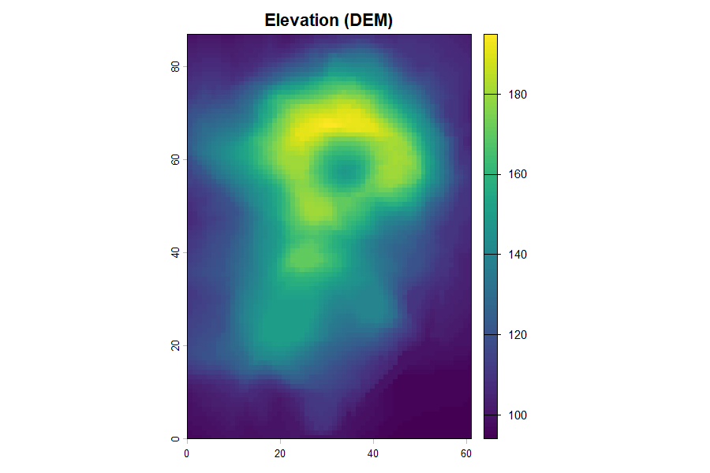
20. Roughness from NDVI (a Manning’s n map)
Vegetation slows water. roughness() turns an
NDVI greenness raster into a Manning’s n map:
bare, low-NDVI cells shed water; green cells resist it.
↑ Continues from above
ndvi <- app(0.8 - 0.6*(dem-global(dem,"min",na.rm=TRUE)[1,1]) /
(global(dem,"max",na.rm=TRUE)[1,1]-global(dem,"min",na.rm=TRUE)[1,1]),
function(v) pmin(pmax(v,0),1)) # YOUR DATA: rast("ndvi.tif")
manning <- roughness(ndvi, method = "ndvi")$n
plot(manning, main = "Manning's n")Greener ground (high NDVI) becomes rougher (higher n) and slows water more — the vegetation map and the Manning’s n map derived from it (Figures 9 and 10).
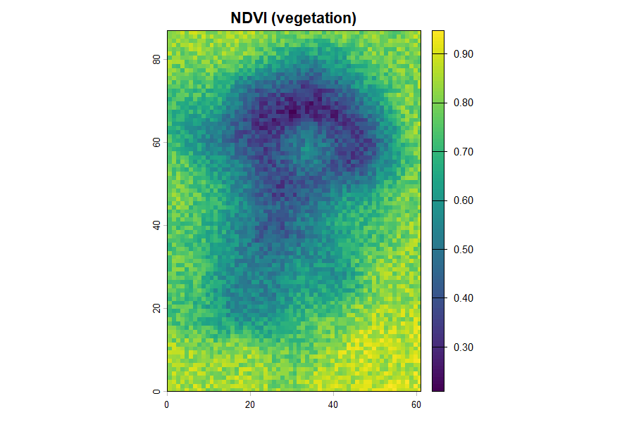
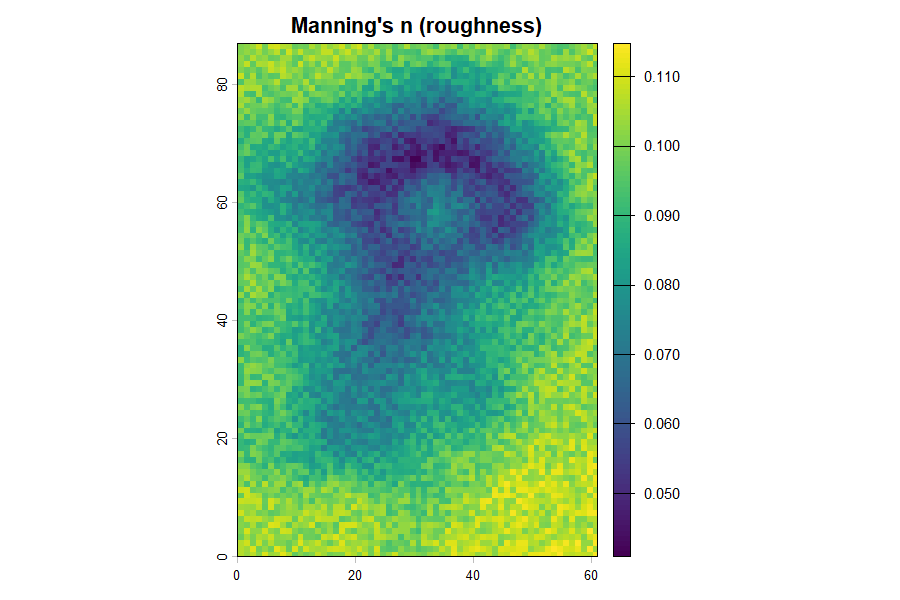
21. Calculating discharge two ways
There are two useful discharges. Manning discharge (per cell) is the flow capacity at a point — useful for sizing a channel or culvert. Cumulative LDD discharge is how much water actually arrives at a point from everything upstream — the right quantity for flood magnitude at the outlet. Good practice uses both.
The cumulative route uses a local drainage direction (LDD) and flow
accumulation. In production this is done with whitebox on a
filled DEM:
○ Shown, not run here
# needs the whitebox package and a real DEM file
whitebox::wbt_fill_depressions("dem.tif", "dem_fill.tif")
whitebox::wbt_d8_pointer("dem_fill.tif", "d8.tif")
whitebox::wbt_d8_flow_accumulation("d8.tif", "acc.tif", pntr = TRUE)Step 1 (fill_depressions) is essential and easy to
forget: a raw DEM has pits and flat spots that trap flow, so it must be
hydrologically corrected before the drainage network reaches the outlet.
The runoff rate that flows down that network comes from
flood_runoff() — the LDD supplies the where,
floodflow supplies the how much. A more realistic version gives
every cell its own runoff coefficient from land cover / NDVI (the
rational-method idea: C near 0.9 on bare ground, near 0.2 under dense
vegetation).
22. The depth and inundation maps
Feeding discharge, roughness and slope through the routing calculation gives a depth map. For a true inundation map, floodflow floods every cell whose height above the channel (its HAND value) is below the water level.
↑ Continues from above
fp <- flood_project("study basin", crs = crs(dem))
fp$rainfall <- accra_rainfall
fp <- flood_runoff(fp, engine = "simple")
fp <- flood_route(fp, area_km2 = 200, hand = hand)
depth <- fp$route$depth_raster
flood_map(fp, layer = "depth") # draws the inundation map
plot(depth, main = "Inundation depth (m)")The HAND method keeps cells above the channel dry, leaving a clean inundation-depth map (Figure 11).
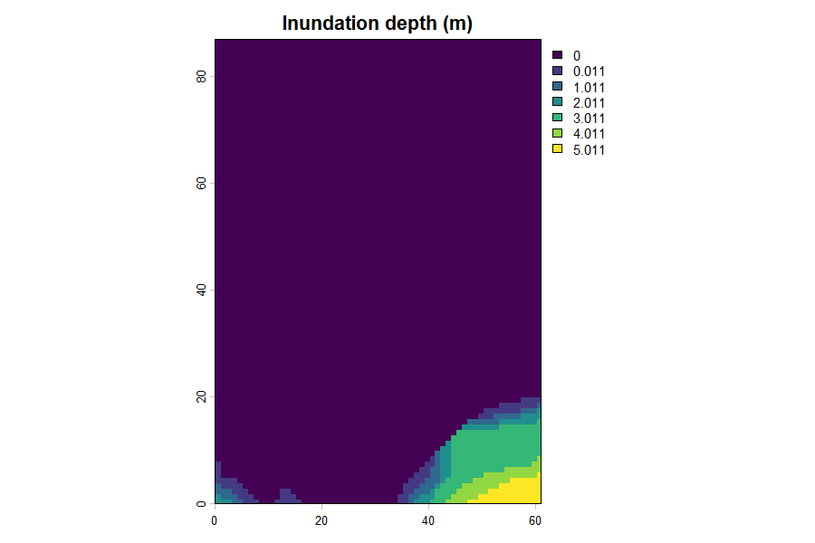
23. The velocity map
How fast water moves matters as much as how deep — fast flow sweeps people and vehicles away. Velocity comes from Manning’s equation using each cell’s depth, roughness and slope.
↑ Continues from above
depth_field <- app(depth, function(v) ifelse(v < 0.05, 0.05, v))
velocity <- (1/manning) * depth_field^(2/3) * sqrt(slope_tan)
plot(velocity, main = "Flow velocity (m/s)")The fastest, most dangerous flow follows the steep flanks, not the flat valley floor (Figure 12).
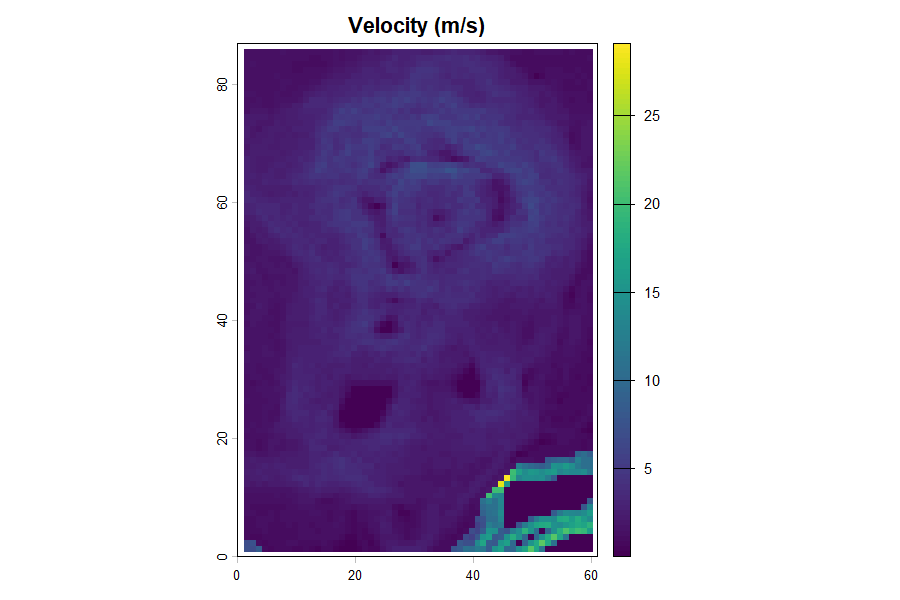
Discharge per cell then follows from continuity,
Q = velocity × width × depth (Figure 13).
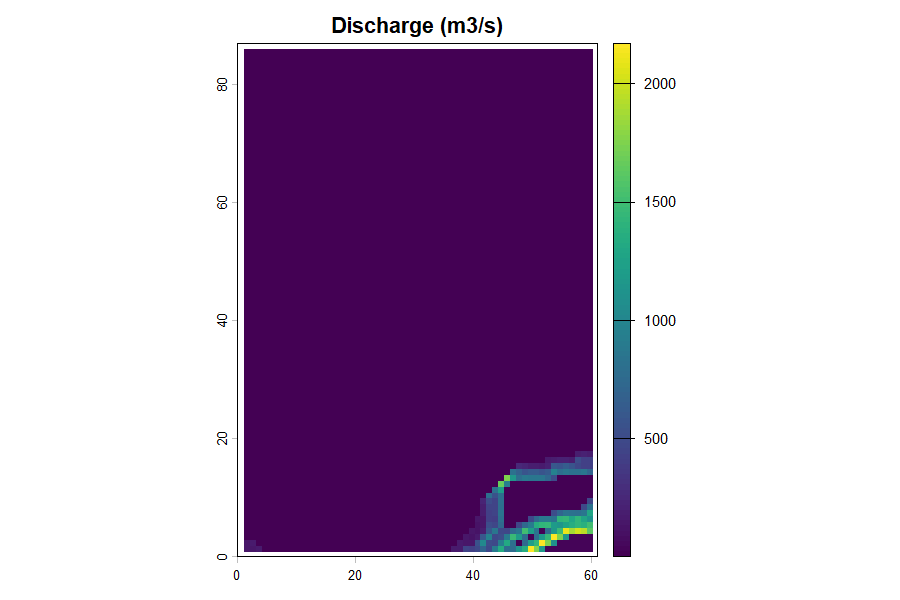
24. Time-bound maps
For early warning we need timing: how long before the flood reaches a place. A travel-time map shows the minutes for water to flow from each cell to the outlet — distance divided by velocity.
↑ Continues from above
outlet_r <- dem; values(outlet_r) <- NA
outlet_r[which.min(values(dem))] <- 1
travel_min <- (distance(outlet_r) / velocity) / 60
plot(travel_min, main = "Travel time to outlet (minutes)")Travel time to the outlet is the map that sets evacuation lead times — blue zones flood within minutes and must be warned first (Figure 14).
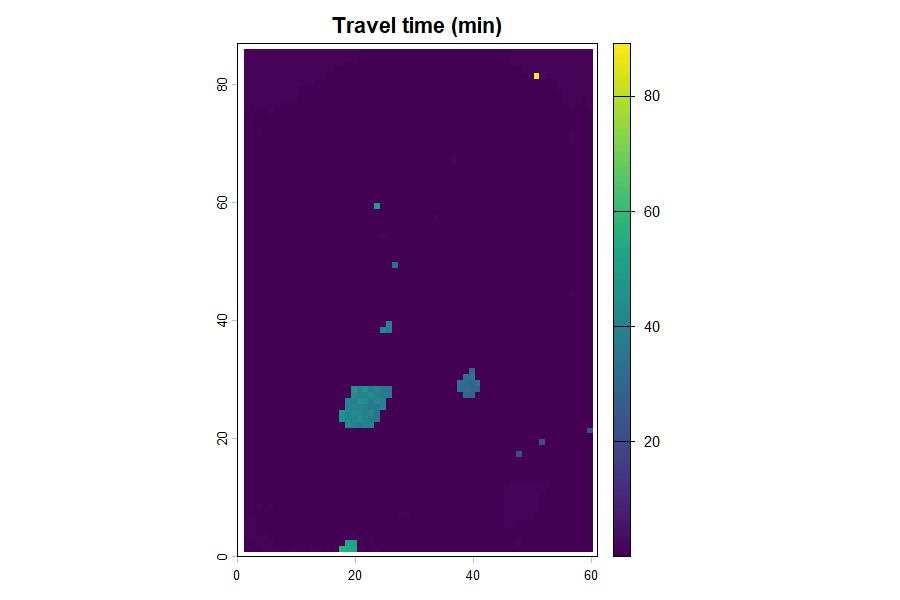
25. The complete spatial script
Every map from this Part, in one runnable block on the
volcano DEM. Change the two YOUR DATA lines
for your basin. Note what the package draws directly (depth via
flood_route(hand=), risk via
flood_vulnerability()) versus what you compute yourself
with the Manning and continuity equations — the point is that you apply
the theory, not call a black box.
▶ Runs on its own
library(terra); library(floodflow); data("accra_rainfall")
# --- terrain inputs ---
dem <- rast(volcano) # YOUR DATA: rast("dem.tif")
crs(dem) <- "EPSG:32630"
slope <- terrain(dem, v = "slope", unit = "radians")
slope_tan <- app(tan(slope), function(v) ifelse(v<1e-4,1e-4,v))
hand <- dem - global(dem, "min", na.rm=TRUE)[1,1]
ndvi <- app(0.8 - 0.6*(dem-global(dem,"min",na.rm=TRUE)[1,1]) /
(global(dem,"max",na.rm=TRUE)[1,1]-global(dem,"min",na.rm=TRUE)[1,1]),
function(v) pmin(pmax(v,0),1)) # YOUR DATA: rast("ndvi.tif")
manning <- roughness(ndvi, method = "ndvi")$n # MAP 1: roughness (package)
fp <- flood_project("basin", crs = crs(dem)) # lumped -> MAP 2: depth (package)
fp$rainfall <- accra_rainfall
fp <- flood_runoff(fp, engine = "simple")
fp <- flood_route(fp, area_km2 = 200, hand = hand)
depth <- fp$route$depth_raster
width <- fp$route$settings$width
df <- app(depth, function(v) ifelse(v<0.05,0.05,v)) # MAP 3: velocity (you compute)
velocity <- (1/manning) * df^(2/3) * sqrt(slope_tan)
discharge <- velocity * width * df # MAP 4: discharge Q = v*A
outlet_r <- dem; values(outlet_r) <- NA # MAP 5: travel time
outlet_r[which.min(values(dem))] <- 1
travel_min <- (distance(outlet_r) / velocity) / 60
risk <- flood_vulnerability(depth/global(depth,"max",na.rm=TRUE)[1,1], # MAP 6: risk (package)
exposure = setValues(dem, rpois(ncell(dem),50)),
vulnerability = setValues(dem, runif(ncell(dem))))| Map | How you get it | Package or you? |
|---|---|---|
| Roughness (n) | roughness(ndvi, method='ndvi') |
package |
| Depth / inundation | flood_route(hand=...)$depth_raster |
package |
| Velocity | (1/n) * h^(2/3) * sqrt(S) |
you compute |
| Discharge (local) | Q = velocity * width * depth |
you compute |
| Discharge (cumulative) | whitebox LDD × flood_runoff() rate |
both |
| Travel time | distance(outlet) / velocity |
you compute |
| Risk | flood_vulnerability() |
package |
Table 3. What the package draws directly, and what you compute from theory.
26. Maps for every day, not just the peak
To watch a flood move, loop over the daily routed series and draw one depth map per day, then let an animation package assemble them. The lumped depth-over-time curve for a single event looks like a depth-over-time curve (red) over the rainfall that drove it (blue), with the depth lagging and outlasting the rain (Figure 15).
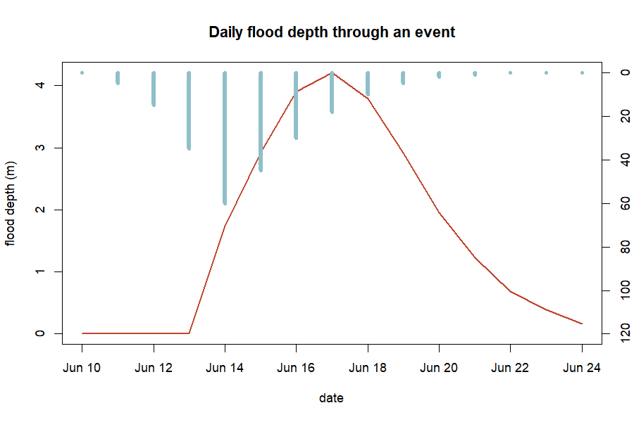
27. Saving your maps, and troubleshooting
Save any raster with
terra::writeRaster(depth, "depth.tif", overwrite = TRUE)
and any plot with png() / dev.off(). The
commonest errors and fixes:
| Error | Cause | Fix |
|---|---|---|
object 'dem' not found |
skipped the DEM setup | run the Section 19 block first |
No rainfall data found |
flood_runoff before rainfall set |
set fp$rainfall first |
NA values in slope |
flat cells, divide-by-zero | floor it: ifelse(slope < 1e-4, 1e-4, slope)
|
could not find function 'rast' |
terra not loaded |
library(terra) before spatial code |
whitebox: command not found |
whitebox not initialised | install.packages('whitebox'); wbt_init() |
object 'manning' not found |
ran a block out of order | run the section top to bottom |
Table 4. Common errors and fixes. Most come from running a ‘Continues from above’ block on its own — use the complete script in Section 25.
PART 3 — Exercises, projects and reference
28. Citing floodflow
If you use floodflow in teaching or research, please cite it:
Owusu, G. (2026). floodflow: Climate-informed flood modelling in R. Version 0.2.0. Department of Geography and Resource Development, University of Ghana.
You can also run citation("floodflow") in R for the
current reference.
29. Reproducing the figures
Every figure is drawn from data floodflow computes on the real
accra_rainfall record. To regenerate them, run the
reproduce_manual.R script that ships in this
manual/ folder:
▶ Runs on its own
source("reproduce_manual.R") # writes every figure as a PNG into figures/The script loads accra_rainfall, runs the full pipeline
and draws each figure with base-R graphics. The Part 2 spatial figures
need terra installed. This is what reproducibility means in
practice: the numbers, and the pictures, come from code you can run.
30. Glossary of terms
- Attenuation — the flattening and shrinking of a flood peak as it travels downstream.
- Catchment / basin — land area draining to a common outlet.
- CRS — coordinate reference system; the map projection of spatial data.
- Delta method — climate-adjusting rainfall by multiplying by a change factor.
- Discharge — water flow rate, in m³/s or mm/day.
- Equifinality — when many different parameter sets fit the data equally well.
- Evapotranspiration (PET) — water lost to air and plants.
- GEV — Generalized Extreme Value distribution, for annual maxima.
- GLUE — Generalized Likelihood Uncertainty Estimation.
- HAND — Height Above Nearest Drainage; each cell’s height above its local channel.
- Hydrograph — a graph of discharge over time.
- Lumped vs. spatial — lumped = one value per basin; spatial = a value in every grid cell.
- Manning’s n — surface roughness controlling flow speed.
- NDVI — Normalised Difference Vegetation Index; satellite greenness, 0 to 1.
- Return period — average frequency of a given event size (e.g. 100-year storm).
- Routing — moving a flood wave downstream and computing its depth.
- SSP — Shared Socioeconomic Pathway; a standard climate-future scenario.
- Time of concentration — time for water to cross the catchment to the outlet.
31. Exercises
Work each formula by hand (a calculator is enough), then run the package to check. Set up first:
▶ Runs on its own
library(floodflow)
data("accra_rainfall")
ext <- flood_extremes(accra_rainfall)-
(easy) Return level. Using the GEV formula and the
fitted parameters in
ext$stationary$par, compute the 25-year design rainfall by hand, then check againstext$return_levels. Answer: about 76 mm. -
(easy) Time of concentration. A catchment has a
5000 m channel at 1.5% slope. Compute
tcwith Kirpich by hand, then verify withtc_kirpich(length_m = 5000, slope = 0.015). Answer: about 69 minutes. -
(medium) Evapotranspiration. Compute PET for a 30
°C day at day 150 at latitude 5.6°N with
pet_oudin(jday = 150, temp_c = 30, lat_deg = 5.6). If 40 mm of rain fell that day, roughly how much is left after PET? Answer: PET ≈ 5 mm, so ~35 mm remains — PET is a small correction on a big storm but dominates on light-rain days. -
(medium) Discharge and depth. Using
Q = (width/n)·h^(5/3)·√S, compute discharge for a 30 m channel, n = 0.04, S = 0.003, at depths of 1 m and 1.5 m. By what factor does Q grow? Answer: ~41 and ~80 m³/s — a factor of 1.5^(5/3) ≈ 1.97, from just 50% more depth. -
(harder) Put it together. Run the full lumped
pipeline (Sections 3–13) on
accra_rainfall. (a) What is the 100-year design rainfall? (b) What peak depth doesflood_routegive atarea_km2 = 200versus400? (c) Why does more area raise depth? Answer: (a) ~110 mm; (b) shallower at 200, deeper at 400; (c) a larger area collects more runoff, so discharge and depth rise.
32. Projects
Longer, open-ended projects — each a small change to code you already have. They make good class assignments or a first real piece of analysis.
-
Your own city. Use
sebkc::weather()(Section 4) to fetch a 40-year daily record for your town, run Part 1, and report its 100-year storm and design flood depth. How do they compare with Accra? -
Design a culvert. Pick a road crossing. Using the
25-year design rainfall and
flood_route(), find the channel width that keeps peak depth below 1.5 m. That width sizes the culvert. -
How rare was the last big flood? Find the daily
rainfall of a real flood in your area (news or a gauge), fit the GEV
with
flood_extremes(), and compute its return period — then repeat under a +20% climate scenario. -
A climate sweep. Loop
flood_scenario()over change factors 1.0, 1.1, 1.2, 1.3 and plot how the 100-year design flood depth grows. Where does risk rise fastest? -
Wet year vs dry year. Split
accra_rainfallinto its wettest and driest years, run the runoff and routing for each, and compare peak depth. How much does antecedent wetness matter? -
Uncertainty on your basin. Take a measured or
estimated flood mark and run
flood_uncertainty(). Report the 90% band and the equifinality between roughness and width. -
Vulnerability hotspots. Build simple exposure
(population) and vulnerability (deprivation) layers for a neighbourhood
and map
flood_vulnerability(). Where would you place early-warning sirens? - Compare the routing ladder. Route the same flood through all five methods and quantify how much each attenuates the peak. Which would you trust for a steep basin, and why?
33. References
The methods floodflow implements draw on the following published
work; each is cited in the relevant section and in the package help
(e.g. ?flood_route).
- Beven, K. & Binley, A. (1992). The future of distributed models: model calibration and uncertainty prediction. Hydrological Processes, 6(3), 279–298. [GLUE uncertainty]
- Chow, V. T. (1959). Open-Channel Hydraulics. McGraw-Hill. [Manning roughness]
- Coles, S. (2001). An Introduction to Statistical Modeling of Extreme Values. Springer. [GEV extreme-value theory]
- Cunge, J. A. (1969). On the subject of a flood propagation computation method (Muskingum method). Journal of Hydraulic Research, 7(2), 205–230. [Muskingum-Cunge routing]
- IPCC (2021). Climate Change 2021: The Physical Science Basis. Cambridge University Press. [Climate scenarios]
- Kirpich, Z. P. (1940). Time of concentration of small agricultural watersheds. Civil Engineering, 10(6), 362. [Time of concentration]
- Manning, R. (1891). On the flow of water in open channels and pipes. Transactions of the Institution of Civil Engineers of Ireland, 20, 161–207. [Manning’s equation]
- Nobre, A. D. et al. (2011). Height Above the Nearest Drainage — a hydrologically relevant new terrain model. Journal of Hydrology, 404, 13–29. [HAND inundation]
- Oudin, L. et al. (2005). Which potential evapotranspiration input for a lumped rainfall-runoff model? Journal of Hydrology, 303, 290–306. [Oudin PET]
- Perrin, C., Michel, C. & Andréassian, V. (2003). Improvement of a parsimonious model for streamflow simulation. Journal of Hydrology, 279, 275–289. [GR4J runoff, via airGR]
- NASA POWER Project. Prediction of Worldwide Energy Resources —
Daily data. https://power.larc.nasa.gov. [Source of the
accra_rainfallrecord, viasebkc::weather()]
The June 2026 Accra flood figures in Section 7 are the official statistics reported by the Ghana Meteorological Agency (GMet) and stated by the Minister for the Interior to Parliament in June 2026, as carried by Ghanaian and international news outlets. They are cited as reported public record, not as package output.
34. Appendix: the code behind every figure
The complete reproduce_manual.R is printed here so the
code that draws every figure lives inside the manual itself. Run it (or
source("reproduce_manual.R")) and each figure is
regenerated as a PNG in a figures/ folder. The Part 2
spatial figures need terra.
▶ Runs on its own
library(floodflow)
data("accra_rainfall")
dir.create("figures", showWarnings = FALSE)
png_ <- function(name) png(file.path("figures", name), width = 900, height = 600, res = 110)
rain <- accra_rainfall
fp <- flood_project("Odaw basin, Accra")
fp$rainfall <- rain
fp <- flood_extremes(fp)
## Figure 1 — annual maxima
am <- tapply(rain$precip_mm, format(rain$date, "%Y"), max); yrs <- as.integer(names(am))
png_("fig01_annual_maxima.png")
plot(yrs, am, type="b", pch=19, col="#1f7a8c", xlab="year",
ylab="annual max daily rain (mm)", main="Annual maximum rainfall, 1981-2026")
abline(lm(am ~ yrs), col="#c1462f", lwd=2); dev.off()
## Figure 2 — present vs future return levels
rl <- fp$extremes$return_levels
png_("fig02_return_levels.png")
barplot(rbind(rl$level_mm, rl$level_mm*1.20), beside=TRUE,
names.arg=paste0(rl$period,"-yr"), col=c("#1f7a8c","#c1462f"),
ylab="design rainfall (mm)", main="Design rainfall: present vs mid-century (+20%)")
legend("topleft", c("present-day","SSP2-4.5 2050"), fill=c("#1f7a8c","#c1462f"), bty="n")
dev.off()
## Figures 3 & 4 — the June 2026 event (cited GMet figures)
png_("fig03_daily_jump.png")
plot(c(2024,2026), c(56,169.2), type="b", pch=19, col="#c1462f", lwd=2,
xlim=c(2023.7,2026.3), ylim=c(0,190), xaxt="n", xlab="",
ylab="highest daily rainfall (mm)", main="Accra daily rainfall record")
axis(1, at=c(2024,2025,2026))
abline(h=110.1, lty=2, col="#1f7a8c"); abline(h=132.1, lty=2, col="#0a3d52")
text(2024.2, 116, "present-day 100-yr (110 mm)", cex=0.8, col="#1f7a8c", pos=4)
text(2024.2, 138, "SSP2-4.5 2050 100-yr (132 mm)", cex=0.8, col="#0a3d52", pos=4); dev.off()
png_("fig04_monthly_record.png")
barplot(c(380.3,420.6,593.2), names.arg=c("2015","2002","June 2026"),
col=c("#8fc0c9","#1f7a8c","#c1462f"), ylab="June rainfall (mm)",
main="Ghana's wettest month on record (June 2026)"); dev.off()
## Figure 5 — hydrograph; Figure 6 — water balance; Figure 7 — routing ladder
fp <- flood_runoff(fp, engine="simple"); q <- fp$runoff$discharge
sub <- q[q$date >= "2023-06-01" & q$date <= "2023-09-30", ]
png_("fig05_hydrograph.png")
plot(sub$date, sub$Q_mm, type="l", col="#1f7a8c", lwd=2, xlab="date",
ylab="discharge (mm/day)", main="Flood hydrograph (2023 wet season)"); dev.off()
mo <- as.integer(format(rain$date,"%m"))
Pm <- tapply(rain$precip_mm, mo, sum); PETm <- tapply(fp$runoff$pet, mo, sum)
Qm <- tapply(q$Q_mm, mo, sum)
png_("fig06_water_balance.png")
barplot(rbind(as.numeric(Pm), as.numeric(PETm)), beside=TRUE, names.arg=month.abb,
col=c("#1f7a8c","#c1462f"), ylab="mm/month",
main="Water balance: rainfall, evaporation, runoff")
lines(seq(2, by=3, length.out=12), as.numeric(Qm), type="b", pch=19, col="#0a3d52", lwd=2)
dev.off()
## (Part 2 spatial figures 8-15 use the base-R volcano DEM + terra; see the full
## reproduce_manual.R in this folder for the complete spatial block.)floodflow — map-first, climate-informed flood assessment for
data-scarce basins. This manual and all its numbers were produced by
running the package on the real, bundled accra_rainfall
record.